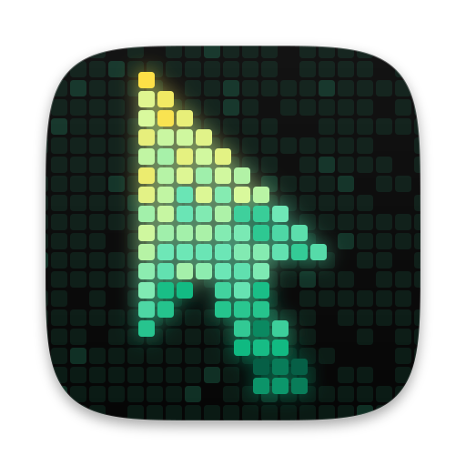
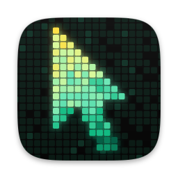

⌘-Tab Default
Nudges the cursor, then presses ⌘-Tab one to six times, like you're flicking between apps.

A tiny bot that stops your Mac dozing off mid-build or mid-talk. It only moves once you step away.
This is Focus Timer's own interface, rebuilt for the web and sped up 15×. Start a session, switch tabs, pick how it moves.
A pair of glowing eyes acts out everything Focus Timer is doing, so you can read it from across the room.
Pick one in Settings or from the menu bar. Each is tiny, and none of them types anything.
Nudges the cursor, then presses ⌘-Tab one to six times, like you're flicking between apps.
A small cursor nudge. Never changes focus.
One line up and back down. Net zero.
A single press of a modifier key. Nothing gets typed and focus stays where it is.
Nothing happens until you've been idle for a couple of minutes. Calls, a locked screen and, if you like, battery power make it stand down.
With Block system sleep on, a session holds off sleep with pmset until it ends. Then everything goes back to normal.
Skip the password installs a sudoers rule that allows only those two pmset commands. It's checked with visudo before it goes live, and Remove takes it out again.
If the app quits mid-session, the next launch puts sleep back the way it was.
Switch it off and a session simply keeps the display awake with caffeinate.
Today, the last seven days and all time, a heatmap of when it moved, and the mix of actions it used.
Every control has a key, and the menu bar icon covers the rest without opening a window.
One download, one drag, two quick permissions. Updates arrive on their own after that.
Grab the disk image for Apple Silicon Macs.
Open the disk image and drop Focus Timer into your Applications folder.
It isn't notarized, so macOS asks first. Choose Open Anyway in System Settings, under Privacy & Security.
On your first session, macOS asks so Focus Timer can post its tiny mouse and key events.
Something else on your mind? Open an issue on GitHub.
pmset, which needs admin rights, so macOS asks when a session starts and ends. Turn on Skip the password in Settings to install a rule that allows just those two commands.
It's dozing. Hover the button and watch it perk up.